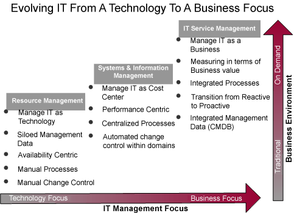
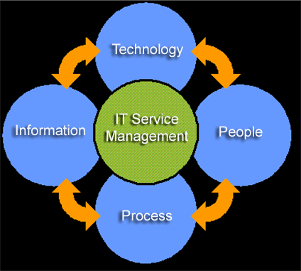

| IT Service Management |
 |
|
IT Service Management represents an evolution from managing IT as a technology to managing IT as a business. This evolution is shown in the graphic below. As businesses move toward On Demand, IT organizations are faced with the daunting challenge of increasing the quality of services provided to business, while simultaneously addressing faster rates of change, rising technical complexity, cost pressures, and compliance issues. With traditional resource and system management approaches, providing effective support for business and efficient use of IT resources is proving impossible. IT Service management provides for the effective and efficient delivery of IT services in support of changing business needs.  Implementing IT Service Management requires the optimal intersection of people, process, information and technology, as shown in the graphic below. When all of these components come together, they can make IT more efficient and effective. ITUP enables users to understand the relationships between these components.  |
© Copyright IBM Corp. 1987, 2007. All Rights Reserved. |